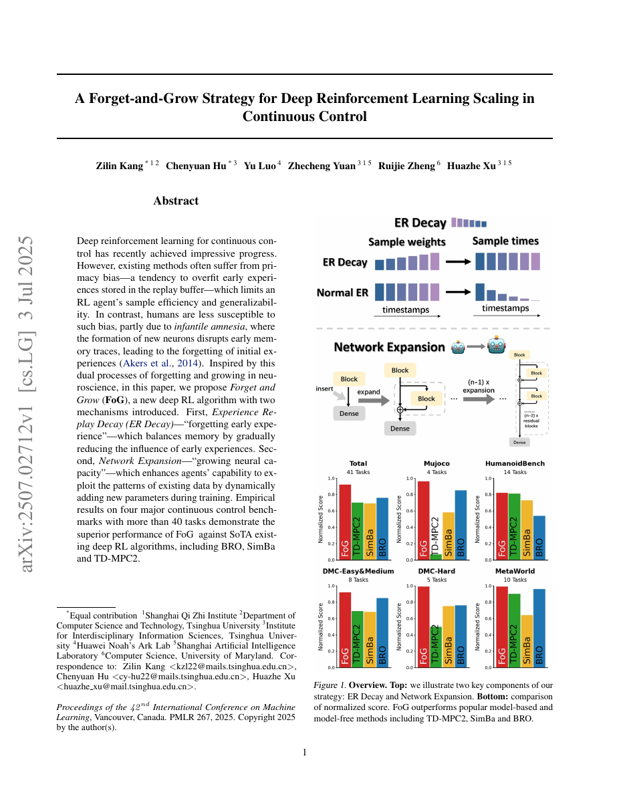

1. Paper Info
A Forget-and-Grow Strategy for Deep Reinforcement Learning Scaling in Continuous Control
| Authors | Kang et al. (Huazhe Xu 为通讯作者) |
| Year | 2025 |
| Type | 连续控制强化学习 / 训练策略优化 |
| Source | Kang et al. - 2025 - A forget-and-grow strategy for deep reinforcement learning scaling in continuous control.pdf |
2. Insight & Novelty
2.1 Q&A 核心洞察
核心罪魁祸首是primacy bias（首因偏差）——训练最早阶段收集的低质量数据通过两个渠道永久性地限制了最终性能：(1) Uniform experience replay让这些早期经验长期主导梯度更新（数据层面）；(2) 固定大小的网络容量被早期简单模式占据后，难以吸收后来更精细的知识（模型层面）。
Forget (Experience Replay Decay, ERD): 随训练进展，系统性地降低回放缓冲区中早期样本的被采样权重或学习影响，让策略从近期更优的数据中学习。
Grow (Network Expansion, NE): 在训练关键阶段动态增加网络层宽度（新神经元），用参数复制+噪声初始化将已有功能迁移到更大网络，为新知识释放参数容量。
灵感直接来源于人类认知中的婴儿期遗忘(infantile amnesia)——婴幼儿无法记住早期经历，这一"遗忘"实际上使大脑能重新组织对世界的理解。
2.2 灵感→洞察映射
| 灵感 | 对应核心洞察 |
|---|---|
| 婴儿期遗忘(infantile amnesia) — 人类遗忘早期不可靠经验以更新认知模型 | Forget: 衰减早期低质量数据的训练信号——"遗忘为学习释放空间" |
| 大脑发育中的突触生成与修剪 — 神经网络随发育成长并重组织 | Grow: 动态增加参数容量——"生长为新模式提供表达空间" |
| 课程学习 — 从简单到困难的渐进训练 | ERD自然形成一种隐式课程：先学基础模式，遗忘后学精细模式 |
2.3 三大新意卡片
新意1: Experience Replay Decay (ERD)
新意2: Network Expansion (NE)
新意3: Forget + Grow的协同互补效应
3. Architecture
3.1 架构面板
基础框架 标准RL
遗忘机制: ERD 数据层
生长机制: NE 模型层
联合训练 协同
3.2 流程图1: FoG训练循环
(带时间戳)"] B --> C["ERD: 按age衰减采样
P(s) ∝ exp(-λ·age)"] C --> D["从buffer采样minibatch"] D --> E["计算actor/critic loss"] E --> F{"到达扩展时机?"} F -->|是| G["NE: Net2Net扩展
W_new = copy(W_old)+noise"] F -->|否| H["常规参数更新"] G --> H H --> I["更新λ(t)衰减系数"] I --> A
3.3 流程图2: Forget-Grow协同机制
早期数据主导梯度"] --> P2["Primacy Bias出现
性能平台/退化"] P2 --> P3["Forget: ERD开始衰减
旧数据权重下降"] P3 --> P4["梯度空间释放
新数据信号增强"] P4 --> P5["Grow: NE扩展网络
新增神经元容量"] P5 --> P6["参数空间扩大
新模式获得表达空间"] P6 --> P7["新数据填充新容量
性能突破平台"]
4. Task Definition
4.1 解决的问题
提高off-policy深度RL在连续控制任务上的样本效率和最终性能，通过对抗primacy bias使训练过程更充分地利用持续收集的环境交互数据。在4类连续控制基准上验证：
- DMControl (DeepMind Control Suite): 标准连续控制任务——倒立摆、步行者、机械臂等
- Meta-World: 多任务机器人操作——开门、按按钮、拾取放置等
- ManiSkill2: 灵巧操作——更复杂的接触丰富任务
- Gymnasium-MuJoCo: 经典运动控制——Hopper、HalfCheetah、Ant等
与BRO、SimBa、TD-MPC2等强baseline比较样本效率和最终回报。40余个任务上均验证。
5. Key Challenge
5.1 第一性原理分析
Primacy Bias的数学本质：
Off-policy RL的目标是学习值函数Q*(s,a)，最优值满足Bellman optimality方程。但实际训练中，我们只能从当前replay buffer采样的有限数据中近似。训练开始时：(1) 数据分布极度偏斜——只有初始策略附近的经验（低质量）；(2) 网络参数随机初始化。
核心问题：早期梯度主导了参数轨迹。由于深度网络的非凸性，参数一旦被推向某个局部最小值方向，后续梯度（即使是"更好"的方向）只能在该basin内微调。Uniform replay mean 早期数据永远等概率地被采样——平均意义上，在整个训练过程中，20%的数据来自训练前5%的时间。
FoG的两个机制恰好从两个正交角度解决：ERD从数据端降低早期经验的权重，NE从模型端扩展优化landscape的容量。
5.2 方法对比表
| 方法 | 机制 | vs 首因偏差 | 对模型影响 |
|---|---|---|---|
| Prioritized ER (PER) | 按TD-error采样 | 间接：大TD-error通常=近期未学习的经验 | 不变 |
| HER (Hindsight ER) | 把失败经验relabel为成功 | 间接：重新利用已收集的数据 | 不变 |
| Reset/Re-train | 阶段性地重新初始化网络 | 直接但粗暴：完全忘记所有旧学知识 | 完全重置 |
| Curr. Learning | 渐进增加任务难度 | 间接：控制数据分布的时间性 | 不变 |
| Progressive Nets | 固定旧层+新增列 | 间接：保护旧知识 | 单向增长 |
| FoG (本文) | ERD + NE | 直接: 数据层+模型层双重对抗 | 渐进功能保持扩展 |
6. Method
6.1 核心公式
标准均匀采样的replay buffer中，transition i被选中的概率为1/N。ERD引入基于age的衰减：
$$ P_{\text{ERD}}(s_i) = \frac{\exp(-\lambda(t) \cdot \text{age}_i)}{\sum_j \exp(-\lambda(t) \cdot \text{age}_j)} $$其中age_i = t_current - t_collected_i，lambda(t)为随训练步数t递增的衰减系数：
$$ \lambda(t) = \lambda_{\max} \cdot \frac{t}{T} \quad \text{(线性调度)} \quad \text{或} \quad \lambda(t) = \lambda_{\max} \cdot (1 - e^{-t/\tau}) \quad \text{(指数调度)} $$等价地，可以在loss中对不同age的样本施加不同权重，而保持采样均匀：
$$ \mathcal{L}^{\text{ERD}} = \mathbb{E}_{(s,a,r,s') \sim D} \left[ w(\text{age}) \cdot \left( Q_\theta(s,a) - (r + \gamma \bar{Q}(s', \pi(s'))) \right)^2 \right] $$其中 w(age) = exp(-lambda(t) * age) / Z (Z确保总权重不变)。两种实现等价，loss加权在实践中更稳定。
给定第l层的权重矩阵W_old ∈ R^{m×n}（n输入dim，m输出dim）和偏置b_old ∈ R^m，扩展为宽度k*m的新层：
$$ W_{\text{new}} = \begin{bmatrix} W_{\text{old}} \\ W_{\text{old}} \end{bmatrix} + \epsilon \cdot \mathcal{N}(0, \sigma^2 \cdot \|W_{\text{old}}\|^2) $$ $$ b_{\text{new}} = \begin{bmatrix} b_{\text{old}} \\ b_{\text{old}} \end{bmatrix} + \epsilon \cdot \mathcal{N}(0, \sigma_b^2) $$下一层的输入权重同步扩展：W_{l+1, new} = [W_{l+1, old} | W_{l+1, old}/2]。除以2确保该层的输出值不变。
FoG = base_RL_algorithm + ERD(lambda_schedule) + NE(expand_steps, expand_ratio)：
$$ \text{for } t = 1 \text{ to } T: $$ $$ \quad \text{collect data, update buffer} $$ $$ \quad \text{sample with ERD: } P \propto \exp(-\lambda(t) \cdot \text{age}) $$ $$ \quad \text{update actor/critic with weighted loss} $$ $$ \quad \text{if } t \in E_{\text{expand}}: \text{apply Net2Net to expand network} $$ $$ \quad \lambda(t) \leftarrow \text{scheduler}(t/T) $$6.2 关键参数表
| 参数 | 含义 | 典型值 | 敏感性 |
|---|---|---|---|
| lambda_max | ERD最大衰减系数 | 0.01-0.1 | 中: 太高丢稀有经验，太低效果不足 |
| 衰减调度 | lambda(t)函数形式 | 线性/指数 | 低: 两种调度差别不大 |
| 扩展时机E_expand | 触发NE的训练步百分比 | 25%/50%/75% | 高: 决定新旧知识容量分配 |
| 扩展比expand_ratio | 每层宽度倍增因子 | 1.5x-2x | 中: 越大容量越大但计算也增加 |
| init_noise_sigma | Net2Net噪声标准差 | 0.01-0.05 | 低: 确保参数可分化 |
| Replay Buffer容量N | 存储transition数 | 10^6 | 低: 标准off-policy设置 |
| actor/critic扩展时序 | 分别何时扩展 | critic先于actor | 中: critic价值函数更复杂 |
7. Principles
7.1 深层机理解读
核心原理1: 数据分布漂移是RL训练的内在特征——不应修复，应利用
Off-policy RL的训练数据分布天然随时间变化（策略改进→访问新状态→新数据）。传统方法试图通过large buffer使数据分布stationary——但这恰恰保留了早期数据的破坏性影响。FoG的洞见是：数据的"陈旧性"是信号，不是噪声。通过主动衰减旧数据，让训练自然适应分布漂移。
核心原理2: 模型容量应随数据质量增长——"先小后大"的动态容量
训练初期数据质量低（随机探索的噪音大），用小网络即可拟合；数据质量随策略改进而提升，此时需要更大网络捕获精细模式。固定大小的网络在两种极端之间妥协——不是太小（后期欠拟合）就是太大（前期过拟合噪音）。NE实现了"跟随数据增长的容量"。
7.2 训练动力学对比
基线RL训练
早期数据→固定网络容量→primacy bias→性能平台。数据分布自然漂移但旧数据持续存在。
FoG训练
早期数据→遗忘旧数据→扩展网络→新模式填入新容量。数据和容量同步演进，突破平台。
8. Figures & Evidence

- 婴儿遗忘类比——人类早期记忆被"遗忘"以重新组织认知模型，FoG同理
- 两条并行机制：ERD(数据) + NE(模型) —— 覆盖首因偏差的两种表现形式
- 跨4类benchmark 40+任务验证——展示了方法的通用性
关键证据: FoG在绝大多数任务上超越baseline (BRO, SimBa, TD-MPC2)；单用ERD或NE已有效果，但两者叠加（FoG）效果最强——验证了互补性；在"极难"任务（长时间尺度、稀疏奖励）上优势尤其明显。
9. Potential Flaw
- 遗忘可能丢失"稀有但关键"的经验: 某些任务中，成功经验非常稀疏（如500步才成功一次），如果这些经验恰好发生在早期且被遗忘，将严重损害学习。论文未讨论对稀疏奖励场景下ERD的特殊处理。
- 扩展时机与衰减速率仍是敏感超参: lambda_max、扩展步百分比、扩展比——这些参数对每个新环境可能需要手动调优。论文未提供自动化选择方案。
- 持续扩展的部署成本: 如果NE在训练期间多次触发，最终网络可能是初始的4-8倍大——增加推理延迟。对资源受限的实时部署不友好。
- 理论分析缺失: 没有提供ERD收敛性的理论保证——在非平稳的衰减采样分布下，Bellman更新的不动点是否存在/唯一尚不明确。
- 仅验证off-policy: FoG依赖replay buffer的时间戳信息。对on-policy方法（PPO等），forget机制需要不同的设计。
9.1 扩展方向
- 自适应衰减速率——根据学习曲线自动调整lambda
- 选择性遗忘——仅遗忘"低质量"经验而非所有旧经验
- Growing的逆操作(Pruning)——后期剪枝冗余参数以降低部署成本
- 扩展FoG到online/on-policy RL
9.2 敏感性分析
| 组件 | 影响 | 等级 | 说明 |
|---|---|---|---|
| lambda_max | ★★★★☆ | 高 | 核心参数——确定遗忘"力度" |
| 扩展时机 | ★★★★★ | 极高 | 过早=浪费容量/过晚=已陷入局部最优 |
| 扩展比 | ★★★☆☆ | 中 | 1.5x-2x间差别不大 |
| 衰减调度类型 | ★★☆☆☆ | 低 | 线性vs指数差别小 |
| 噪声sigma | ★☆☆☆☆ | 很低 | 仅需确保非零 |
| ERD vs NE组合 | ★★★★★ | 极高 | 两者叠加效果远超单独使用 |
10. Motivation
10.1 五步动机链
10.2 一句话动机
许多RL训练的失败不是因为算法不会学习，而是因为训练最初的少量经验过早地固化了网络表示——FoG借鉴人类认知中的遗忘与成长机制，为深度RL重新打开持续学习和表示重构的窗口。
11. Reading Takeaway
11.1 一句话小结
FoG证明: 深度RL的首因偏差可以通过"遗忘+生长"双机制系统性解决——ERD(Experience Replay Decay)从数据端衰减早期低质量经验的影响，NE(Network Expansion)从模型端动态增加参数容量以吸收后期优质数据。两者协同作用时效果远超单独使用，在40+连续控制任务上验证了跨算法(SAC/TD3/BRO/SimBa)的即插即用通用性。
11.2 关键教训
- 数据的"年龄"是有用信号: 不是所有经验等值——陈旧经验对当前策略的参考价值天然低于新鲜经验
- 模型容量应随数据质量增长: 固定容量在RL的动态数据环境中是不合理的——容量需求随训练进展递增
- 遗忘可以是建设性的: 机器学习的通常叙事是"防止灾难性遗忘"，但FoG展示了选择性遗忘对学习的促进作用
- 即插即用很重要: FoG不修改核心RL算法——只改数据采样和网络架构——这使其可以无缝适配多种算法
11.3 UAV强化学习应用展望
- 对抗sim2real训练中的primacy bias: UAV仿真训练的早期数据（悬停/简单航线）远多于后期复杂机动数据——ERD可主动遗忘早期简单模式，让网络更好地学习后期复杂策略
- 动态网络扩展应对任务增量: UAV从简单(悬停控制)到复杂(避障穿越+目标跟踪)的任务增量训练中，NE可在不遗忘已有技能的前提下增加新容量
- 多旋翼到固定翼的迁移: 从多旋翼仿真训练扩展到固定翼任务时，NE提供额外参数处理不同动力学
- 在线自适应: 在真实飞行中持续收集经验并在线遗忘/生长，实现飞行性能的终身提升
11.4 推荐阅读(4-6)
| # | 论文 | 关联 |
|---|---|---|
| 1 | Prioritized Experience Replay (Schaul et al., 2016) | 非均匀采样replay的先驱——按TD-error而非年龄加权 |
| 2 | Net2Net (Chen et al., 2016) — Accelerating Learning via Knowledge Transfer | 功能保持网络扩展——NE的数学基础 |
| 3 | Progressive Neural Networks (Rusu et al., 2016) | 通过增加新列保护旧知识——与FoG的不同扩展策略 |
| 4 | BRO (Lee et al., 2024) — Behavior Regularized Offline RL | FoG的主要对比baseline之一 |
| 5 | SimBa (Hansen et al., 2024) — Simplicity Bias in RL | 简单性偏差——首因偏差的一种表现形式 |
| 6 | TD-MPC2 (Hansen et al., 2024) — Scalable World Models | 当前连续控制SOTA，FoG验证了跨算法通用性 |
From local PDF pages 1-5 analysis. See original PDF.